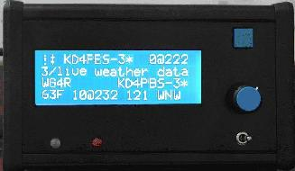
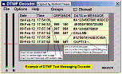
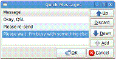
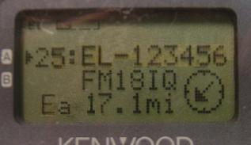
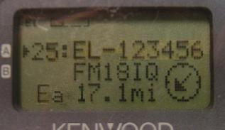

Amateur Radio
Amateur Radio
Universal Text Messaging/Contact Initiative
Amateur Radio
 Initiated Jan/Feb 2009, Pending approval of the Amateur Radio
Advanced Project Development Committee
Initiated Jan/Feb 2009, Pending approval of the Amateur Radio
Advanced Project Development Committee
Identified below are more than TWO DOZEN Amateur Radio TEXT MESSAGING systems. The purpose of this web page is an initiative to tie them all together! A parallel initiative (called AVRS) is to tie together all the Ham Radio VOIP systems as well so that we have universal callsign-to-callsign connectivity, both Texting and Voice!
Sept 18 Universal Connectivity-by-callsign Sunday Workshop at the ARRL/TAPR Digital Communications Conference! Please come join this workshop and help us figure out how to tie this all together!
Universal Local and Global Text-Messaging -by-callsign- is needed throughout Amateur Radio. Although text messaging has been a fundamental APRS capability for over 17 years and is now embedded in many APRS amateur radios as shown here to the right, I count over 26 other Amateur Radio Text-messaging capabilities below that are not yet fully integrated into a single over-arching amateur radio-wide capability! Yet it would be so easy to do... if we just got excited about the possibility and did it!
After 9/11 and Katrina it was clear that amateur radio needs immediate responsive communications to simply locate and establish initial communications. Such fundamental local/global communications are trivial on the National APRS frequency. . This web page summarizes all of the capabilities for TEXT-Messaging not only in dedicated APRS radios shown to the right, but ALL radios and ALL devices in the field including cell phones!
Surely, every Ham radio operator can find one of these techniques below he/she can use!
And if we tie them all together, then it doesn't matter what he uses!
ANY Ham, ANY where, using ANY device can text message ANY other ham, ANY where, on
any of his devices, knowing nothing but his CALLSIGN!
The remainder of this web page discusses the existing systems that involve amateur radio text messaging in the following Broad Categories:
ORGANIC PACKET SYSTEMS:
UI-Instant Messenger was written by Andy Pritchard to correct the problems
with some details of APRS messaging that were not complete in UIview. His add-on
not only improved UIview's efficiency in handling messages, but the program can
also operate stand-alone as an application with
the AGW Packet Engine, or as a direct IP client on Internet
connections. Use it as a replacement for the messaging function inside
UIview to overcome the lack of the proper decaying repetition rate for
unacked msgs and the lack of the full ACK algorithms of APRS.
Winlink Text-Messaging: .
An APRS interface has been added to the Winlink
system so that any APRS radio can be used to send and receive Email via the Winlink
system. The system is called
APRSlink and was designed by
Lee, K0QED. It allows any APRS radio operator to log in and send/receive
email via Winlink using only the front panel display and keybad of the radio.
In addition to full two-way Winlink and Email messaging, there are two other
features that fully link Winlink and APRS for quick messaging:
MultiPSK by F6CTE has a built-in APRS packet message mode.
OTHER HAM RADIO MESSAGING: .

Message Displays on Any Radios: .
There are many devices that can turn any two-way
radio into a Universal Text-Messaging device by simply adding an APRS display system
at the speaker/mic interface.

Message Displays on Paging Radios: .
In addition to the APRS radios, there are an estimated 500,000
FT-51R family and TH-78A
radios (from the 1990's) that have a built-in TEXT messaging and paging function
that can also be used for messaging. Messages are entered from the Keypad and displayed
on the radio front panel. Messages can also be received and displayed on PC's using
simple DTMF decoding software.
But not only can this capability be used for sending
and receiving text messages, we can also push other important local information
to the front panel displays of these radios. . For example, the locally recommended
voice frequency for travelers and visitors.
Please see details on
how we can integrate this into APRS.
Surplus Text Pagers: With the rise of the cell phone industry there
appear to be thousands of low cost text messaging pagers
that can be easily converted to amateur frequencies. These would allow anyone
with one of these pagers to receive APRS messages, and local APRS bulletins, and
information from a local APRS->POCSAG gateway. This would be integrated with
APRStt so that the same user could show where he is and enter his callsign by
DTMF on his existing HT or mobile. There was some work on ham radio paging networks
in Germany by DL3SDW back in 2003
It would be
easy to tie these pagers into the Universal Text Messaging System with
something as simple as a Xtal change and a little firmware in an APRS-> POCSAG
Gateway. A POCSAG encoder is built into every Kantronics KPC-9612 TNC.
DCS-Text Messaging Radios: .
Still newer radios use the DCS codes to send
and receive text messaging. Again, gateway software can be written for these radios
as well so that they can send and receive ham radio text messages with not only
themselves but any other ham radio, APRS radio, DTMF radio, Cell phone, Blackberry
or what have you. Known radios with the DCS-Text Messsage capabliity are the VX-8R,
VX-3R, and FTM-10R/SR. See
Message set-up,
Member list, and
Sending & Receiving
All Other Radios with DTMF: . There are two methods
for Text Messaging using the simple DTMF built into almost all amateur radios. First
is sending in the paging-format defined above for the older Text Paging radios. These
messages can be sent by ANY radio, and received on the special paging radios above
or on a separate DTMF decoding software on a PC. See an
example here. . Secondly is the
APRS Touchtone project started in 2001 using the gateway program calld APRStt.
This DTMF Messaging extends basic information exchange to all radio amateurs, not
just those that are APRS equipped. . Even the old crumudgen that shows up with his
venerable IC-2AT for example can participate. . Reading your text messages is as
simple as entering your callsign in a DTMF memory. When you send your pre-loaded
DTMF callsign on the APRStt voice frequency, the APRStt engine will respond by voice
with any listed traffic and will read them to you on demand. .
See the APRStt web page.

Automatic Link Establishment (ALE) Radios: Not only do ALE systems on HF provide for
call-up-by-callsign voice connectivity, but they also provide a minimum TEXTING capability.
There is no reason why a text sent on ALE is not also delivered to the same callsign's
APRS radio and Vice Versa. See the Global HF ALE
web page.
MESSAGING ON OTHER DEVICES: .
The goal here is to encourage the development of applications for all typical wireless devices
that will enable them to exchange text-messages with any other ham
radio operator by callsign addressing. This can tie in all user wireless devices into
the global APRS system to greatly enhance communication in support of emergency and
event communications. These applications can be simple for messaging only, or can bring
in full APRS map displays as well. See how
simple it is.
OLPC APRS INTERFACE: .
Every laptop and palmtop held by ham radio operators
needs a text-messaging interface to ham radio. For example, this interface for
the OLPC (One-Laptop-Per-Child) laptop named the XO checks into the APRS system and can
send and receive
APRS text-messages and email whenever the OLPC is in WI-FI range. This activity was written
by Jack Zielke, KG4GJY. See the
web page for installation and operation. Again this
November, the OLPC is being offered under the
buy-one-give-one-free
program at Amazon.com.
APRS Messages to/from Your IPHONE:.
NV6G, Greg announced his beta iPhone application and AB3Y, David Ponevac, has developed
another application called IBCNU that not only provides
APRS messaging, but position reporting as well.
APRS on Windows-Mobile 5&6: . Lynn, KJ4ERJ, author of APRSISCE mentions
that he has an APRS-IS client (beta) running for Windows Mobile 5 and 6 specifically
tested on the AT&T Tilt and maybe the SmartPhone (Motorolo Q, I believe)...
See his mobile KJ4ERJ-12 on FINDU.COM or APRS.FI. This can bring APRS to every ham
with these cell phone devices!
APRS EMAIL MESSAGES TO THE INTERNET: .
Any APRS station can send brief text-messages
using email via APRS to any cell phone or Internet user. The technique is extremely
simple. Just address your APRS message to one of the Email engines below and
make the first word of the message be the intended email address followed by the message.
This is automatically picked off the APRS-Internet-System (APRS-IS) by the email engine
and sent via conventional email. The sender receives an APRS ack for the message.
WEB BROWSER TO APRS MESSAGING: .
There are a few methods for sending APRS messages from
on-line APRS-Internet (APRS-IS) systems to APRS mobiles and handheld operators. .
We hope that such systems implement the full APRS message mechanism to assure
reliability and accountabliliy (see issues).
Here are some systems:
INTERNET CLIENT APPLICATIONS -TO- APRS/EMAIL TEXT MESSAGING: .
There are a number of Amateur Radio software applications that tie directly to the internet
giving the operator direct text messaging and email capability to all other users of that
same internet application. For example APRS users on the internet can fully text message
each other, and Echolink users can also fully text message each other, yet it is silly
that they cannot talk to each other!
ECHOLINK and IRLP: These two very powerful Voice-over-IP systems provide the same
kind of global connectivity to amateur radio voice operations as APRS provides to digital
operations. Echolink has operator-to-operator text messaging, and this system needs
to send parallel copies of those messages to the same callsigns in APRS, so that if the
Echolink operator is not at his operating position, but might be mobile, then the
same message can be delivered to the front panel of his APRS radio in real time!
SMS MESSAGES AND EMAIL TO APRS:
Getting standard SMS Text Messaging and standard SMTP Email to the end APRS User
in the field via his radio is the one remaining un-fulfilled link in the Universal
Ham Radio Text Messaging System. Our goal is to be able to send and
receive text messages no matter what the device and no matter where they are.
This includes sending from cell phones, palm-tops, blackberry's, pagers,
and any other portable device. The fundamental obstruction to this simple
yet powerful capability is simply the need for security and filters to
protect the RF links from overload, possible abuse, and inappropriate
material and spam.
SMS TO APRS SYSTEM IN NORWAY: .
Kai Gunter, LA3QMA reports a system allowing Norwegian HAMS
sending SMS to an APRS station. . For this to work they first have to
send a SMS to a short numer 2440 with APRS as the "codeword" and
the APRS-IS passcode and callsign. .
If the passcode is correct for the callsign this mobilenumber is stored
so that the user can send a SMS to an APRS station without this
procedure the next time. .
Additional goals for the system are to send the
aprs.fi static picture
as an MMS. The APRS ==> SMS direction is not yet implemented.
One issue is "roaming" due to accounting and costing issues.
There are (and have been) many Amateur Satellites that are enabled for text messaging.
Since most of these satellites are accessible just about from anywhere on earth a few
times a day, they make excellent ways to get a message out of a wilderness area. Existing
working satellites are
PCSAT-1,
ARISS
and the many older satellites mentioned in
ASTARS.
. In an effort to encourage text messaging via those satellites, we encourage
a satellite version of the Simulated Emergency Test called
SSET. .
The objective of SSET is to see how many amateur operators can get an APRS email text-message sent
via satellite using only their APRS HT or mobile rig.
APRS-INTERNET and I-GATE IMPROVEMENTS:
A major initiative to support all of this Universal Text Messaging concept is to
improve the end-to-end reliability of the message delivery from the APRS-Internet
(APRS-IS) system back to RF and the end user's radio. A first step in that
direction is an upgrade to all IGates to have them report-back to the APRS-IS
the status of their delivery of the message. Did they deliver it to RF? Using
what rule? How many hops? See the details of the
Igate-path-report project.
OTHER APRS CAPABILITIES:
Remember that global APRS messaging is just a
small part of the
overall local and Global APRS objective of providing local real-time situational
awareness and connectivity for the exchange of pertient information among amateur
radio operators.
TRAVELERS VOICE REPEATER FREQUENCY OBJECTS:
. All of the above APRS messaging devices should also be able to receive and display
amateur radio information of immediate value. The most important of which, is
the FREQUENCY of the nearest locally recommended voice repeater for travelers
and visitors.
. Since 2004 we have been
encouraging this
Local Info Frequency Initiative for the best recommended voice repeater
and other RF assets of value to the traveler such as the local IRLP, EchoLink, and
Winlink frequencies, or NET times or meetings in progress, etc as shown here.
Notice how the IRLP and ECHOLINK nodes identify not only their node numbers and
callsigns, but also their Tone, Range and status. (Bsy, Rdy, Lnk etc)...
By pressing the OK button to see the POSIT screen, you can see that the Echolink
node is 17.1 miles to the Southwest.
[these photos were taken before we noticed that the Freqeuency
on the second line was missing!]
APRS is a two-way local Information Distribution and Communication System
(not just a vehicle tracking system). See APRS misconceptions! .
The objective is Human-to-human local real-time info and communications! .
TRACKERS ARE TWO-WAY-TOO: . Even transmit-only APRS trackers should be
configured to facilitate two-way human communications. . The RECEIVER should be tuned
to a desired voice communication
calling channel with this frequency information placed into the beacon text
of the tracker. . This way, all who see the tracker can also establish contact
with the operator. . Often this can simply be the
Voice Alert frequency.
HANDHELD DATA ENTRY: While we are talking about overlooked capabilities,...
Not only can these radios, cell phone and laptops convey messages and frequencies, but
they also make excellent data entry devices in the field for amateur radio at special events.
(and not just position and messages!).
See HANDHELD data entry at a scout event.
Bob, WB4APR


 APRS RADIOS: . For APRS client software and APRS built-in radios (shown at
the top of this page) it is trivial to send and receive text-messages and Email
on their front panel. The TH-D7 display is shown above...
In this case, it is sending an Email. . Just press the MSG button, select
INPUT on the MSG Menu, enter EMAIL as the address,
and make the first text of the message be an email address
followed by your message. . In the example above, an EMAIL to A3XYZ@AMSAT.ORG
says
OK in OceanCity with HT & whip!. .
If your email is digipeated, then you will see MY MESSAGE
flashed on the screen indicating success.
APRS RADIOS: . For APRS client software and APRS built-in radios (shown at
the top of this page) it is trivial to send and receive text-messages and Email
on their front panel. The TH-D7 display is shown above...
In this case, it is sending an Email. . Just press the MSG button, select
INPUT on the MSG Menu, enter EMAIL as the address,
and make the first text of the message be an email address
followed by your message. . In the example above, an EMAIL to A3XYZ@AMSAT.ORG
says
OK in OceanCity with HT & whip!. .
If your email is digipeated, then you will see MY MESSAGE
flashed on the screen indicating success.
D-STAR Radios: Although the Dstar radios do not have any built-in
radio-to-radio text messaging capability, they can be connected to PC's on
each end and with the right software such as
(D-rats), users can then
keyboard message similar to other systems.
 APRS Messages to Your Cellphone: . N3FLR Frank Rossi reports that
he uses "YahooAlert" to send all of his APRS messages to his cell phone. First,
Find-U has RSS output capability
so he has his computer RSS Feed Reader watching his Feed From FindU,
and YahooAlert also watching.
After setting up Yahoo Alert for a pager, he uses his phone's text e-mail
address such as xxxxxxxxxx@txt.att.net . Then you just need to know what
your phone's "e-mail address" to "text address" is.
You don't need mobile internet to do it this way, just text ability.
That will work with a text pager also. .
When FINDU sees a message to him on APRS it generates an RSS Feed that
now Yahoo-Alerts is watching.
YahooAlerts then forwards the RSS Message as Text to his cell phone.
Although this is only one way communications, it still lets him receive
his APRS messages. He also says that you can set up RSS feeds from
FindU for weather alerts, or APRS users X amount of miles from you.
You can make the miles anything you want. He has not tried that function
yet.
APRS Messages to Your Cellphone: . N3FLR Frank Rossi reports that
he uses "YahooAlert" to send all of his APRS messages to his cell phone. First,
Find-U has RSS output capability
so he has his computer RSS Feed Reader watching his Feed From FindU,
and YahooAlert also watching.
After setting up Yahoo Alert for a pager, he uses his phone's text e-mail
address such as xxxxxxxxxx@txt.att.net . Then you just need to know what
your phone's "e-mail address" to "text address" is.
You don't need mobile internet to do it this way, just text ability.
That will work with a text pager also. .
When FINDU sees a message to him on APRS it generates an RSS Feed that
now Yahoo-Alerts is watching.
YahooAlerts then forwards the RSS Message as Text to his cell phone.
Although this is only one way communications, it still lets him receive
his APRS messages. He also says that you can set up RSS feeds from
FindU for weather alerts, or APRS users X amount of miles from you.
You can make the miles anything you want. He has not tried that function
yet.
APRS CLIENT PROGRAMS AND IGATES: . Almost all APRS client programs include an internet
interface so that not only can the operator see the local RF tactical situation, but
he can also see the global network as well. As such he can text message anywhere in the
world to both RF and internet users alike. In fact, it is these home client stations
that also provide all of the internet-gateways (IGates) that provide the global connectivity
that makes APRS so universal.
 MESSAGING VIA SATELLITE:
MESSAGING VIA SATELLITE:


 

{kind=link}
{kind=link}
{kind=link}
{kind=link}
{kind=link}